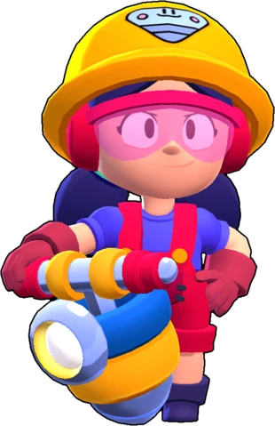

¿Quién es Jacky
A Jacky le encanta hacer temblar el suelo y a los rivales con su martillo mecánico. Su súper atrae a los enemigos más cercanos y los hace picadillo. ¡Ten cuidado por donde pisas!
Jacky es una Brawler Superespecial que tiene una salud alta y una producción de daño moderadamente alta pero inconsistente. Tiene un rasgo que le permite cargar su súper de los enemigos que la dañan. Ataca con su martillo neumático, que rompe el suelo e instantáneamente inflige daño en un área circular a su alrededor. Su súper atrae enemigos en un gran radio.
|  |
NIVEL DE FUERZA 11 |
Sus gadgets
SUBIDÓN NEUMATICO: Jacky recibe un subidón de energía y se mueve un 20% más rápido durante 3 segundos. |
CONSTRUCTORA: Reconstruye las estructuras a su alrededor. |
Sus habilidades estelares
 |
NO HAY DE QUÉ: Al recibir daño, Jacky devuelve el favor y transfiere un 33% del daño en un contraataque que dejará a los rivales temblando. |
 |
CASCO BLINDADO: El casco blindado de Jacky la protege reduciendo el daño que recibe en un 15%. |
Su hipercarga
EVENTO SISMICO: La super ahora relentiza a los enemigos durante 1.5 segundos |
 Braian Arancibia
Braian Arancibia Aya El Baarar
Aya El Baarar